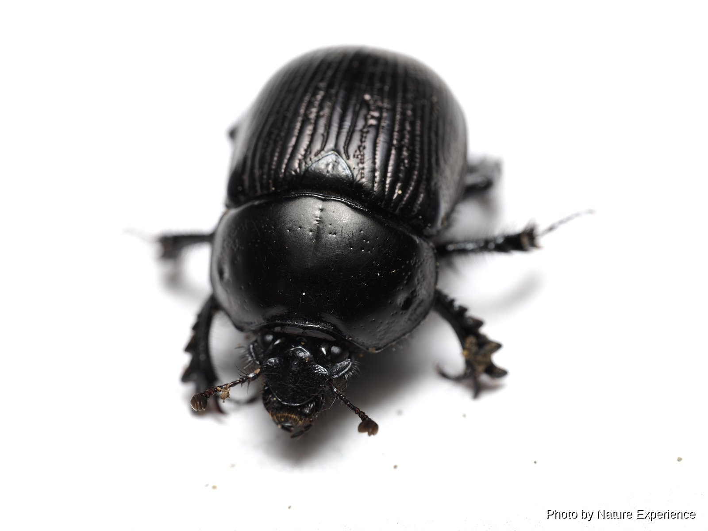
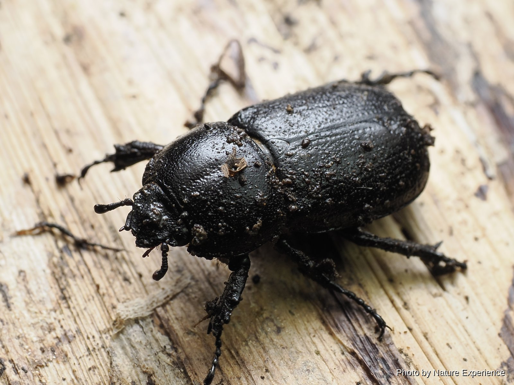
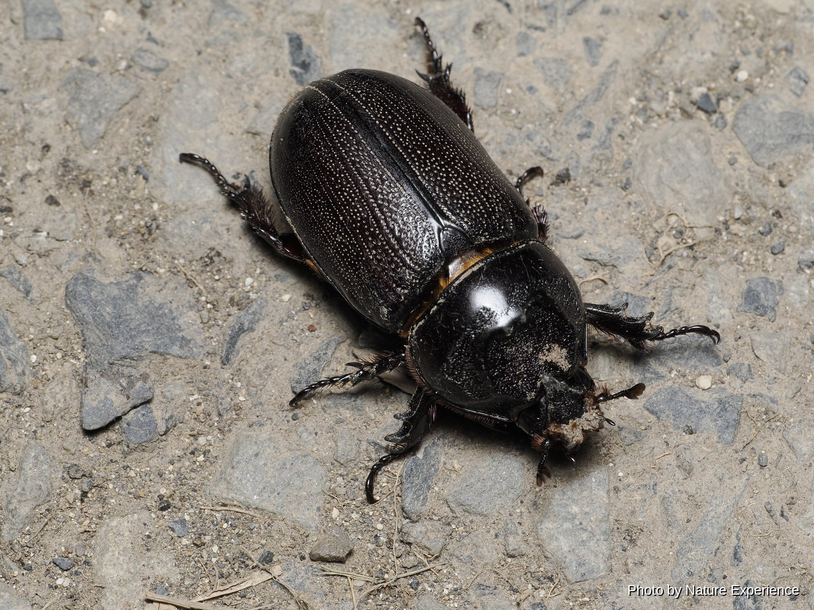
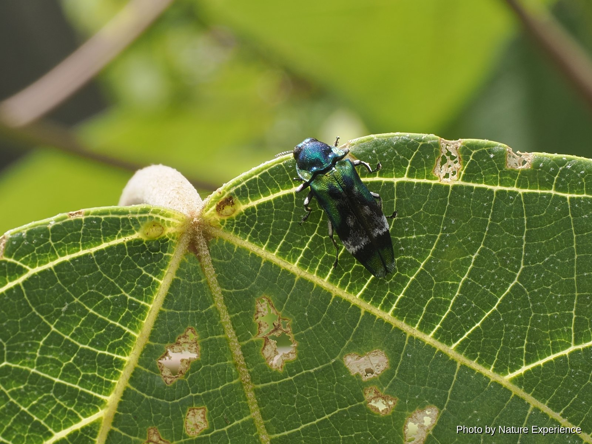
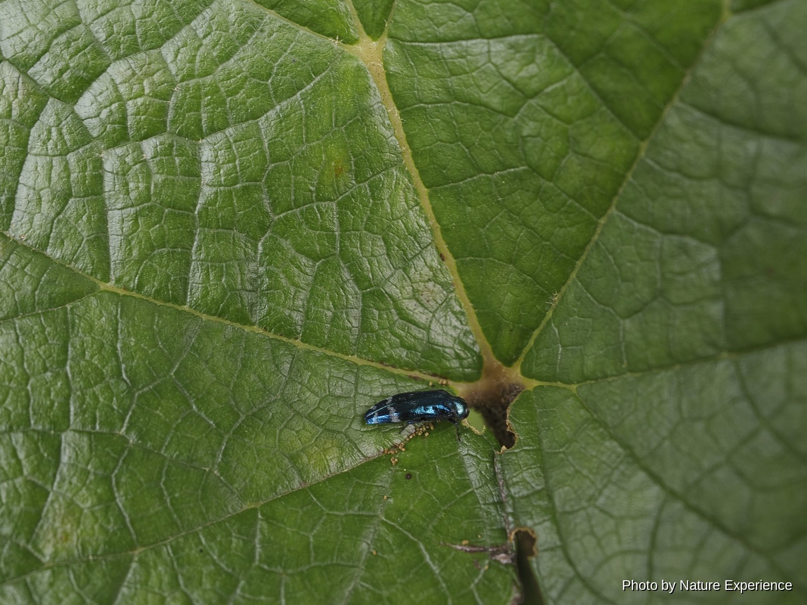
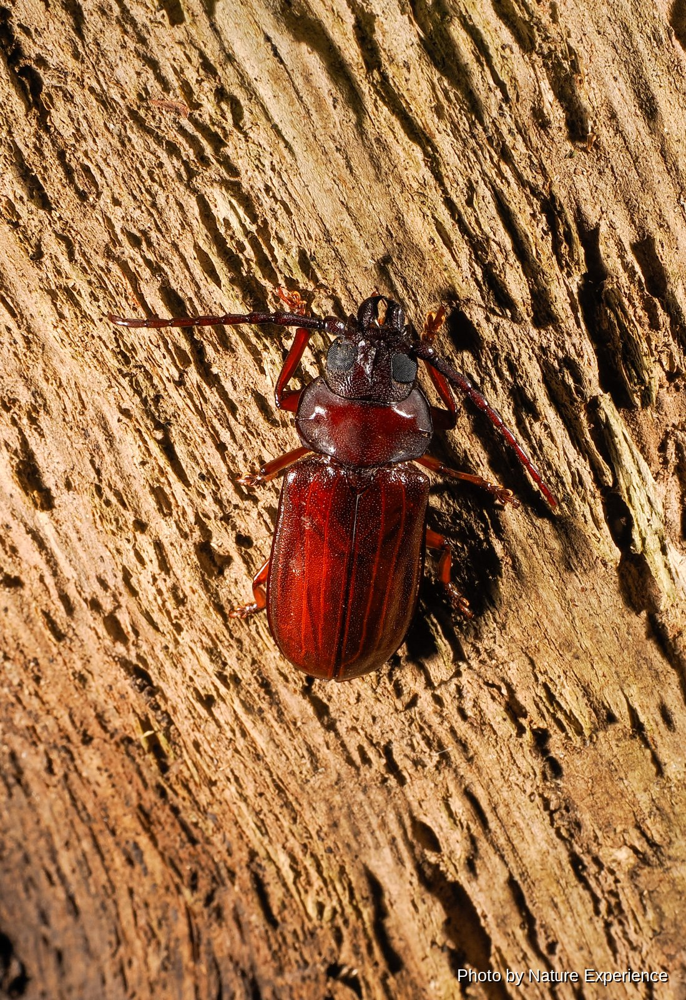

甲蟲
―― 糞金龜類 ――

分布於奄美大島的稀有糞金龜，採集記錄非常稀少。1986年由越智輝夫以 *Aphodius (Trichaphodius) atsushii* 之名記載，後經分類修訂，現歸入Gilletianus屬。據推測以奄美黑兔的糞便為食，但其生態尚有許多未知之處，採集實例也十分有限。

僅分布於奄美大島、德之島的固有種。1975年由桝元敏也以 *Aphodius ohishii* 之名記載，現歸入Chilothorax屬。主要以奄美黑兔的糞便為食，秋季至春季常可見到，夏季則幾乎難覓蹤影。

體長13〜20毫米。僅分布於奄美大島、德之島的固有種(德之島分布有另一亞種)，後翅退化，無法飛行。夜間在山地森林中四處走動尋找奄美黑兔的糞便，具有在糞球下方挖洞、用前腳一邊後退一邊將糞球拖入洞中的習性。由於分布範圍極為有限、遷移能力弱，加之過去採集壓力導致個體數量大幅減少，被環境省紅色名錄列為易危(VU)。
禁止採集(國立公園指定動物・條例指定稀有野生動植物)，日本環境省紅色名錄:易危(VU)
體長可達20毫米，是日本產黑蜣科中體型最大的物種。僅分布於奄美大島、德之島的固有種，秋季至冬季活動，聚集於奄美黑兔及野豬的糞便。具有用前腳抱住糞便一邊後退一邊拖拽、運回自己巢穴的獨特習性。被鹿兒島縣紅色名錄列為準瀕危。
鹿兒島縣紅色名錄:近危(NT)―― 犀金龜類 ――

小犀金龜 *Eophileurus chinensis* 分布於奄美大島、德之島、與路島及請島的亞種。體長雄性約20〜25毫米，雌性約15〜20毫米。棲息於平地到山地的森林中，夜行性，常見於林地地面或林道上行走，初夏至晚秋期間也會飛向樹液及燈光。成蟲幾乎全年可見，但並非個體數量很多的物種。

原產於中南半島周邊的外來種。據信20世紀初隨從台灣進口的資材混入侵入石垣島，為日本國內最早記錄，此後分布逐漸北擴，1991年在奄美大島、德之島也被確認。目前已在南西諸島幾乎全境定著並自然繁殖。作為在椰子類、鳳梨、甘蔗等植物的莖部及芯部鑽孔為害的農業害蟲而為人所知，也有人擔憂其與本地犀金龜類之間的競爭關係。
外來種(1991年首次在奄美大島、德之島確認，為椰子、鳳梨、甘蔗的害蟲)

―― 吉丁蟲類 ――

體長24〜40毫米。分布於北海道至沖繩的姥吉丁蟲 *Chalcophora japonica* 在奄美群島、沖繩諸島的亞種。偏好松樹的枯木或衰弱木，幼蟲在木材中取食成長。成蟲在初夏至夏季可見。

體長約11毫米的小型吉丁蟲，分布於奄美大島以南地區。窄吉丁蟲屬的成員以夏季強烈日照下活躍著稱，本種也大致在6月至9月間可見。

具琉璃色光澤的小型吉丁蟲，已在奄美大島確認分布。窄吉丁蟲屬的成員以夏季強烈日照下活躍著稱，本種也大致在6月至9月間可見。
―― 天牛類 ――

體長26〜34毫米。廣泛分布於關東、中部地方以南的本州，以及四國、九州、沖繩島以北的南西諸島(含奄美大島、德之島)，國外見於朝鮮半島及中國西南部。常聚集於樟樹、椎樹、紅楠等樹木，夜行性，也會飛向燈光。6月至8月前後常見。

僅分布於奄美大島的固有種。體色紅底黑紋，十分美麗，7月前後出現在深山森林中的枯立木上。因在奄美大島採集到本種的費里耶神父而得名。根據鹿兒島縣稀有野生動植物保護條例被指定為稀有野生動植物，禁止捕獲、採集。
禁止採集(鹿兒島縣稀有野生動植物保護條例・指定稀有野生動植物)